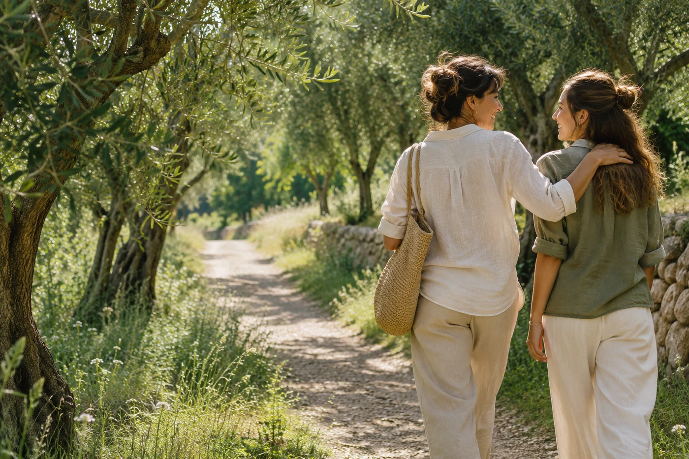

Respiración y relajación
Respirar, relajarse y observar la mente con más contexto.
2 artículos disponiblesVer publicacionesFamilia, Salud y Bienestar
El cuerpo, la mente y el tiempo que compartimos. Un espacio para detenerse, aprender y ampliar la mirada.
Ver los cuatro temas
Divulgación para la vida cotidiana.
Respirar, relajarse y observar la mente con más contexto.
2 artículos disponiblesVer publicacionesUn espacio dedicado al movimiento y a la conciencia corporal.
Artículos en preparaciónVisitar la secciónUn espacio de divulgación sobre alimentación y hábitos cotidianos.
Artículos en preparaciónVisitar la secciónUn espacio para comprender el descanso y nuestra relación con el tiempo.
Artículos en preparaciónVisitar la secciónPara leer con calma
Dos ensayos de Isabel Florido Mayor sobre respiración y meditación.
Respiración y relajación
Respiración y relajación
Aviso de divulgación general: Los contenidos de este espacio son informativos y educativos. No constituyen consejo médico, diagnóstico clínico ni prescripción sanitaria individualizada.
Información y alcance
Este espacio no ofrece diagnóstico, tratamiento ni consejo sanitario individual. No sustituye la atención de un profesional sanitario ni solicita datos sobre tu salud. Cada contenido indica su autoría, fecha y fuentes; los contenidos sanitarios requieren revisión profesional de su contenido sanitario antes de publicarse.